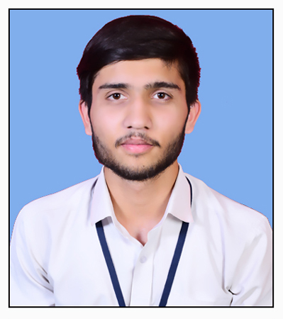

Contact : rajyadav7047@gmail.com
Linkedin : linkedin.com/in/rajyadav-2920r0218j8
GitHub : github.com/Rajyadav2912
|  | "Hello, my name is Raj yadav. I have always been passionate about the Software industry. Currently, I am learning Java with DSA and Web Development. In terms of my education, I am a 3rd-year B.Tech student specializing in Electronics and communication engineering. I have gained valuable experience and skills through my minor project. When it comes to my personality, I am a very curious person when I am working. I am excited to be a part of this conversation and look forward to sharing and learning from each other!" |